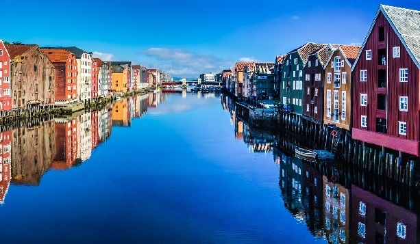

Historia Trondheim (średniowieczna nazwa to Nidaros) wiąże się ściśle z postacią króla Olafa Haraldssona. To on umocnił w Norwegii władzę królewską i rozpowszechnił chrześcijaństwo. Poległ w 1030 roku w bitwie pod Stiklestad i został pochowany w ówczesnym Nidaros. Krótko po śmierci został ogłoszony świętym. Na jego grobie zbudowano kościół, a miejsce pochówku stało się ośrodkiem kultu. Przez 500 lat, do czasu reformacji przybywali tu pielgrzymi z całej Skandynawii. Między Oslo a Nidaros wiódł specjalny pielgrzymi szlak, którym pątnicy podążali do sanktuarium.
Niewiele jest w Norwegii zabytków, które mogą się równać z Nidarosdomen. Pierwszy kamienny kościół powstał tu ok. 1070 roku, a wygląd zbliżony do dzisiejszego katedra otrzymała ok. 1300 roku. Aby zrozumieć jej potęgę i znaczenie trzeba wrócić do średniowiecza. Wyobraźmy sobie norweskiego chłopa, który zza wysokich gór, często po kilkusetkilometrowej wędrówce przybył w to święte miejsce... Jak wielkie wrażenie wywierał na nim majestat tej budowli. I jak ważne musiało to być miejsce, skoro pielgrzymi tygodniami znosili trudy, by choć raz w życiu odwiedzić Nidarosdomen... Zastanawiamy się nad tym, podziwiając fasadę katedry. Szary, bogato rzeźbiony gmach z figurami świętych i ornamentami budzi respekt. Wzrok przyciąga ozdobna rozeta nad wejściem, a wewnątrz urzeka surowe piękno kościoła i niezwykłe witraże. I ta świadomość, że „dotykamy” historii...
Trondheim w przeszłości